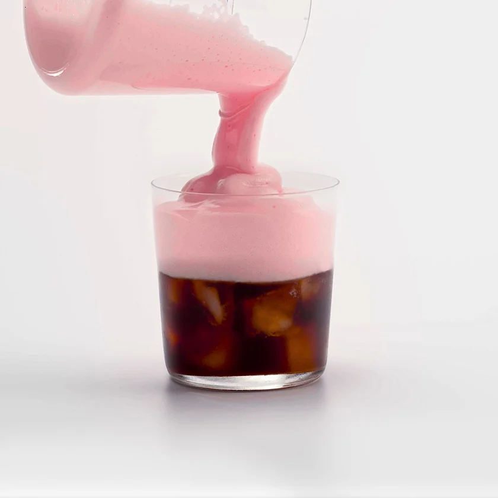

Vegan Strawberry Cold Foam Cold Brew

A delcious cold brew recipe that will make you say "Starbucks, who?"
Ingredients
- 8 Ounces of Cold Brew Coffee
- 2 Tbsp. strawberry syrup
- 2 Tbsp. Trader Joes Vegan Heavy Cream
- 1 Tbsp. Oatmilk
Steps
- Pour the cold brew over the ice cubes
- Add strawberry syrup, vegan heavy cream and oatmilk to a small glass or metal frothing pitcher
- Froth the syrup, heavy cream and oat milk together for 20-30 seconds or until you're happy with the thickness
- Slowly pour the cold foam into the cofffe to ensure it stays on the surface
- Take a sip!